手機直向 1080×1920 ・ 3/4 微傾俯視・CoC 級渲染 ・ 2026-08-08 玩法定案：參照《爆炸城堡TD》改為「城堡生存塔防」——炮台主角手動瞄準＋戰鬥點數抽卡配置隨機英雄＋蜂群敵潮
| 機制 | 我們的版本 |
|---|---|
| 主角 | 赫克托爾常駐中央門樓（「你」）：自動開火；按住戰場拖曳＝虛線瞄準連射＋範圍濺射 |
| 英雄配置 | 無徵兵/合成/金幣。殺敵集「⚔ 戰鬥點數」→ 集滿跳「選擇技能」三選一（隨機英雄加入戰鬥／守軍升銜／技能強化），🎲 每場 3 次全部刷新；抽到的英雄自動站上隨機空塔台 |
| 上場名冊 | 物理×4（弓/矛/石/油）＋神系祭司×4（宙斯⚡連鎖閃電・阿波羅☀太陽火球灼燒・波塞頓🌊怒濤擊退・雅典娜🦉聖光矛＋城門回血）＋主角赫克托爾 |
| 能力成長 | 等級（升銜卡）×2.3 傷害；神系專屬強化卡只在該祭司在場時入池（多跳/延燒/怒濤/神佑）；沸油/箭雨吃強化卡疊流派 |
| 敵人 | 全場漫野蜂群（單波最多 44+，間隔低至 0.28s），量大體弱；到牆前佔位排兩列戰線攻門 |
| 城堡 | 六座圓塔台＋中央大門樓（S_castle_strip 素材）；英雄站塔台（兵種色光圈＋塔下等級盾徽）；城門/城牆四段戰損（裂紋帶→冒煙→燃燒＋紅光危急） |
| 特效 | 全彈道軌跡光尾、魔法命中爆閃/衝擊環/水花、每擊跳傷害數字（暴擊金色大字、灼燒橘字） |
| 模式 | 戰役 3 關＋通關解鎖無盡・十年圍城（程序生成、最佳波數紀錄） |
| 元素 | 🔥火（阿波羅/沸油）・⚡雷（宙斯連鎖+麻痺）・☠毒（帕里斯疊毒減速）＋🗿獨眼巨人壓場 |
| 城堡 | 六塔英雄站位＋三階段城牆戰損（完好→輕損裂紋→重損破口，硬切換＋煙塵飛石演出）＋置底數值血條 |
| 階段 | 內容 | 狀態 |
|---|---|---|
| A 品質底盤 | 全機制殘留清掃、素材完整性斷言、戰損三階段、卡圖生成、數值血條、路徑/佔位修正 | ✅ 完成（本版） |
| B 戰役擴充 | 關 4–7：夜襲雲梯（E_ladder 已有素材）、攻城槌/攻城塔實戰化、阿基里斯 BOSS 戰、卡池加深 | 待開工 |
| C 完成度 | 關 8–10 木馬終章、音效層（WebAudio）、局外成長（星數換永久加成）、平衡曲線調校 | — |
| D 上架打磨 | 教學引導、手機實機效能三檔、上架首頁、完整通關錄影驗收 | — |
鏡頭固定在特洛伊城正上方。敵軍由畫面上方（海灘）沿三條路往下推進；我方守軍站在下方城牆垛位向上攻擊；最底部是拇指操作區。
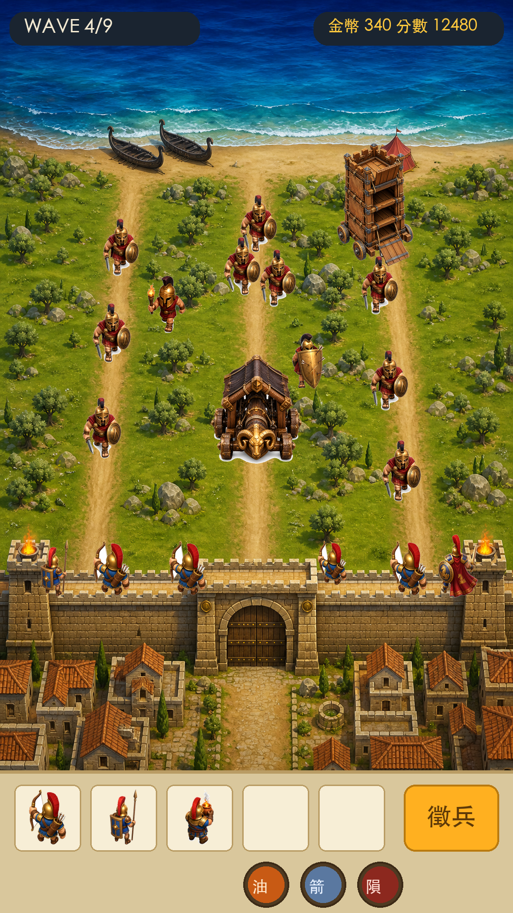
戰場背景（海→沙灘→三路草原→水平城牆＋城門→城內民居）為整張一次生成，全圖同一透視；其上疊獨立 sprite：敵軍沿路行軍、攻城槌/攻城塔推進、守軍（弓/矛/赫克托爾）站牆頂走道，最下方為徵兵格＋技能鈕。
角色與器械為獨立 sprite 程式擺放（座標進 LAYOUT、DEV 工具可拖曳）；背景每關可整張換生（日/夜/黃昏/殘城），角色沿用不重生。
v5 已修正：城牆改為背景內建（水平、無拼接透視打架）、黑船沙底座與土路接縫問題隨整張背景生成一併消失。城門戰損四態將以「門板區域局部重生＋疊圖」實作。
| 類別 | 元件 | 俯視畫法 |
|---|---|---|
| 地表 | 海／沙灘／草地 三帶 | 平塗色帶＋浪紋短棒／沙點／草斑；土路＝淺褐帶＋碎石點 |
| 海上 | 黑船（普通／著火） | 細長船身（圓角梭形）＋甲板橫紋＋桅杆圓點＋收帆橫桁；著火版掛火焰元件 |
| 沙灘 | 帳篷、火盆、軍旗 | 帳篷＝方形頂＋對角稜線；火盆＝圓環＋火焰；旗＝桿點＋飄帶 |
| 戰場 | 橄欖樹、岩石、殘骸（斷矛/盾） | 樹＝雙層圓樹冠；岩石＝灰色圓塊；殘骸增加戰場敘事 |
| 城牆 | 牆段（可橫向拼接）、垛口、垛位、側塔 | 石色厚帶＋上緣鋸齒垛口＋磚縫線；垛位＝發光圓框（空位提示） |
| 城門 | 四段戰損（完好→裂→破洞冒煙→半塌燃燒） | 木板直紋＋兩道青銅橫箍；裂縫線逐段增加，末段掛常駐火＋煙粒子 |
| 城內 | 民居屋頂×6、神殿屋頂 | 矩形屋頂＋屋脊線；戰損時逐棟換成起火版 |
| 特效 | 火焰／火花／煙／餘燼／彈幕 | 全程式粒子（規格沿用 GDD_v2 §6，粒子池上限 600） |
全部存於 public/assets/V4/。地表三張為無縫貼圖（遊戲內平鋪）；其餘為獨立物件（白底去背後入場景組裝），任一張不滿意都可單獨重生。
實作上只是把「草地／海／環境光」三組色票換掉＋增減擺設（夜戰加火把光暈、殘城把樹換成焦木、第 6 關反攻把鏡頭區塊上下對調）， 工程成本極低但十關看起來關關不同。
每個兵種一張 sheet，由 codex image_gen 以 CoC 風格整張一次生成（單次生成內角色長相/比例/色調天然一致，切格後不逐幀閃爍；重生也是整張重生）。 規格：每格 256×256、每動作 4 幀、播放 8–10fps。我方單位背對鏡頭朝上（站牆上朝敵射擊）、敵方面朝鏡頭朝下（向城牆推進），同一顆 3/4 俯視鏡頭。
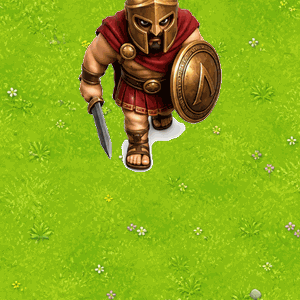
劍盾兵 行軍
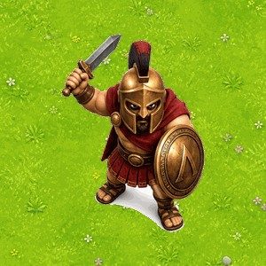
劍盾兵 攻擊
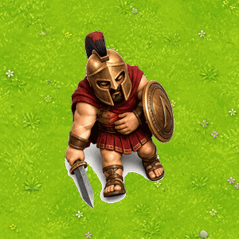
劍盾兵 死亡
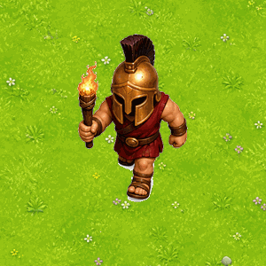
火把兵
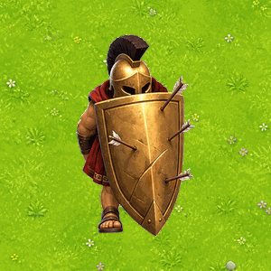
盾龜兵
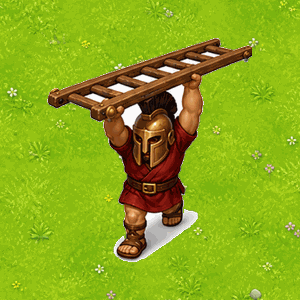
雲梯兵
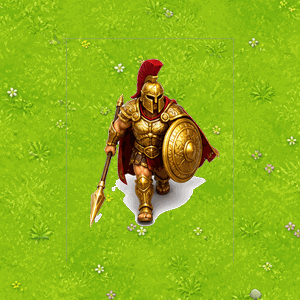
BOSS 阿基里斯
攻城器械的行走／攻擊／損毀動態在遊戲內以程式動畫（晃動、撞擊位移、火焰粒子）呈現，不另生分幀。
投射物（箭／三連箭／投石／火油罐／敵方火球／金幣）以 image_gen 生成單張小圖； 火焰、火花、煙、餘燼、命中閃光全部走 程式粒子（規格沿用 GDD_v2 §6：粒子池上限 600、三檔自動降階、ADD 混合光暈），不依賴生圖。
| 步驟 | 做法 | 防堵的舊版問題 |
|---|---|---|
| ① 風格母 prompt | 一段固定前綴，所有素材共用（存於 scripts/asset_manifest_v4.json 的 style 欄）：「premium mobile strategy game art in the style of Clash of Clans / Clash Royale: chunky stylized cartoon 3D look, polished painterly rendering, soft shading + AO + specular highlights, vibrant saturated colors, 3/4 top-down bird's-eye camera (~60°), white background」。任何一張圖不得自訂風格詞。 | 渲染語言混雜（每張圖自帶風格打架） |
| ② 分鏡稿隨圖附上 | 把本頁對應的分鏡格當姿勢／構圖描述寫進 prompt（動作分解、朝向、持物），要求 image_gen 照分鏡生成。 | 視角不一（俯視地板配正面立繪） |
| ③ 整張 sheet 一次生成 | 角色類一律「1 張圖＝1 角色全部動作幀（4 欄 × 動作列網格）」，切格由 scripts/slice_v4.py 處理；重生也是整張重生。 | 動畫幀之間長相漂移、閃爍 |
| ④ 先測後批 | 每個類別（角色／器械／地表／擺設／UI）先生 1 張測試圖 → 我逐項對照驗收表 → 你過目 → 才批量。manifest：scripts/asset_manifest_v4.json，gen_v4.mjs 以 existsSync 跳過已完成、可中斷續跑。 | 批量生完才發現整批不能用 |
| ⑤ 後處理統一 | sips 縮到目標尺寸 → 去背（沿用 chroma 流程）→ 全圖色票量化：把每張圖的顏色吸附到 §色票最近色，程式強制全專案同一調色盤。 | 明度/飽和失控、顏色打架 |
| ⑥ 逐張驗收表 | 每張圖過五關：俯視角✓／色票內✓／細節≤3 層色✓／影子=右下橢圓✓／尺寸正確✓。任一不過＝單張重生，不將就。 | 細節密度過高、比例不統一 |
估算：角色 sheet 13 張＋地表/擺設/城牆件約 25 張＋UI 約 12 張 ≈ 50 張生成（每張 60–120 秒，批量背景跑約 1.5–2 小時，失敗重生另計）。
現有 public/assets 舊素材整批封存到 _v3_archive/（不刪檔，由你決定去留）。
以下不是設計稿，是 image_gen 實際生成的素材（存於 public/assets/V4/）。
GIF 是「切格 → 連通白底去背（保留角色高光）→ 置中 → 疊草地」管線跑完的動態效果——同張圖內生成的幀長相完全一致，動起來不閃爍。
2026-08-07 定案：第一版扁平向量風格已否決（檔案已歸檔至 public/assets/V4/_flat_rejected/），全面採用本節 CoC 質感。
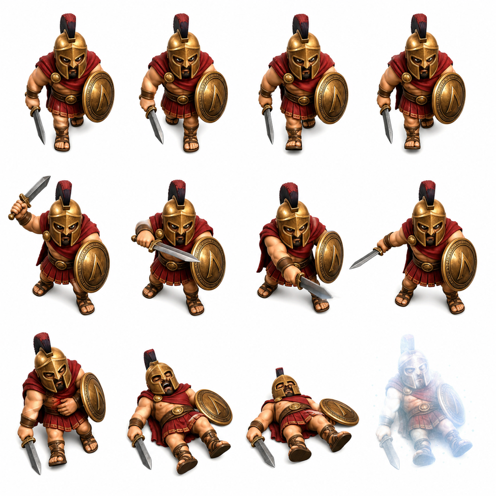
劍盾步兵 4×3（行走／攻擊／死亡）
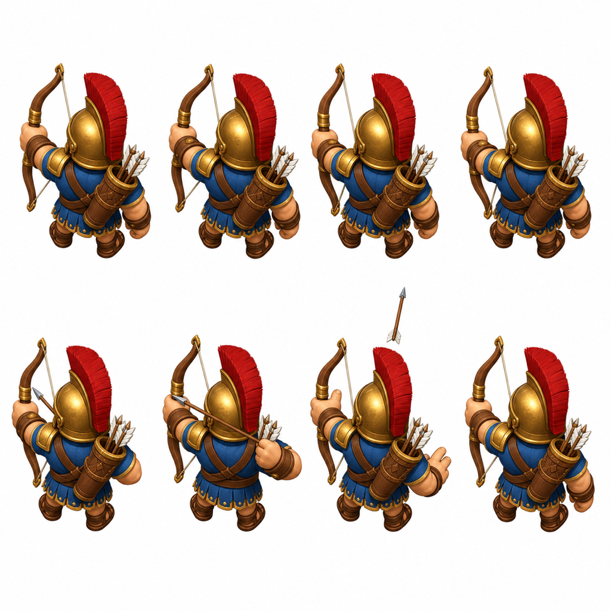
弓兵 4×2（待機／射擊・背面朝上＝站牆視角）
行軍（邊走邊推進）
攻擊循環
死亡（播一次）
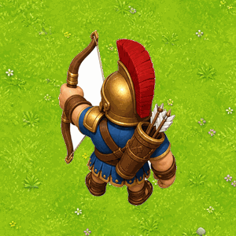
弓兵 待機→射擊
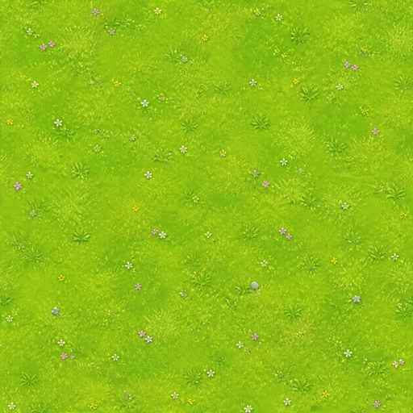
草地無縫貼圖
操作原則沿用你的偏好：點擊優於拖曳（合成＝點兩下、上牆＝點兵再點垛位）、一鍵合成鈕、所有可點目標 ≥ 96px。
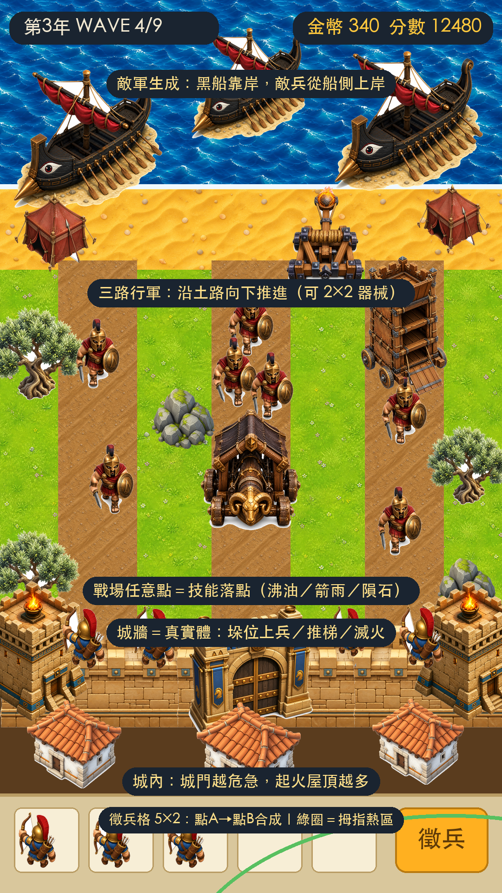
戰鬥標準畫面：六大區域職責標註＋右下拇指熱區（綠圈）
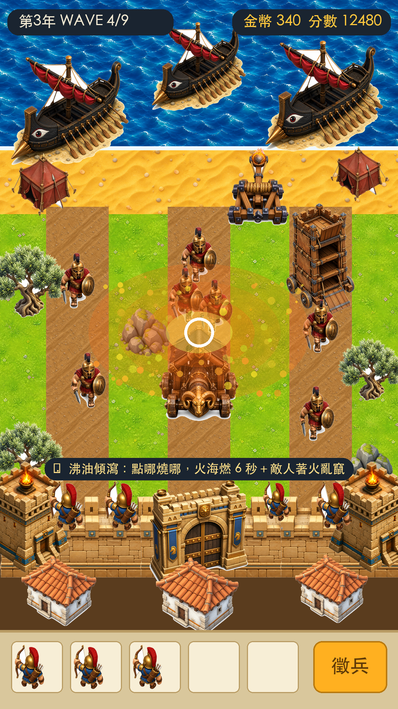
技能施放：點擊落點（白圈）→ 扇形火海 6 秒＋濺射火粒
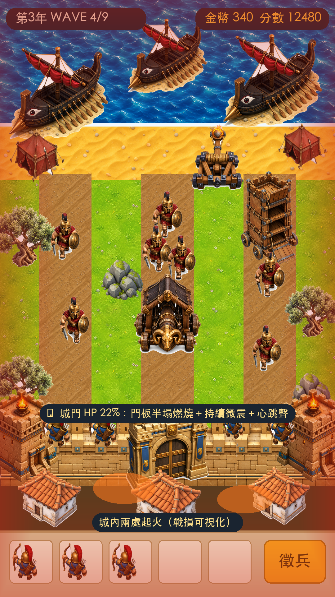
城門危急：紅色 vignette 常駐＋城內起火＋持續微震
| 項目 | 規格 |
|---|---|
| 主按鈕 | 高 ≥120px，金色雙色調（上亮下暗）＋深框；按下縮 0.94 回彈 |
| 技能鈕 | 直徑 150px 圓鈕，CD 以藍色扇形遮罩倒數；可放時金光呼吸 |
| 徵兵格 | 5×2 格，每格 96px；可合成對象亮綠框；選取中橘框 |
| 合成操作 | 點 A → 同級同種 B 全部亮綠 → 點 B 完成；另設「⚡一鍵合成」；拖曳仍可用 |
| 上牆操作 | 點守軍 → 空垛位發光 → 點垛位；再點守軍可召回 |
| 字級 | HUD 34px／按鈕 44px／傷害飄字 40px（暴擊 56px 金色） |
| 安全區 | HUD 避開瀏海 60px；底部操作列避開 home bar 40px |
| 流程 | 說明 |
|---|---|
| 標題 → 選關 | 「開戰」進選關；預設聚焦最新解鎖關 |
| 選關 → 戰鬥 | 顯示本關敵種預告＋建議兵種 → 出征 |
| 戰鬥 → 勝利 | 星數＝城門剩餘血量（≥70% 三星／≥30% 兩星／勝即一星） |
| 戰鬥 → 敗北 | 城門爆破演出 → 敗得壯烈 → 一鍵重打 |
| 暫停 | 續戰／重打／回選關／音量；DEV 工具入口也藏在這（按 D 或連點版本號） |
| 存檔 | localStorage：關卡星數、金幣、設定 |
十關不是「第幾年」的流水帳，而是一部三幕劇：兵臨城下 → 十面楚歌 → 命運逆轉。每關開場一句過場文案、通關一句結語，玩家隨劇情感受牆內外的壓力變化；新機制與 BOSS 全部服務故事節拍。
千帆自海平線而來。特洛伊人自恃牆高，直到第一支火把落在垛樓上。
| 1 搶灘之日 | 黑船搶灘、首波接戰（教學）。結語：「牆會保護我們——目前是。」 |
| 2 第一把火 | 火把兵燒了垛樓，玩家第一次親手滅火。守城不再是旁觀。 |
| 3 狄俄墨得斯的挑釁 | 首位 BOSS 單騎叫陣。擊退他，他丟下一句：「我去搬更大的傢伙。」（伏筆攻城槌） |
器械一件件登場，牆在呻吟。全劇最低谷在阿基里斯踏地那一刻。
| 4 無月之夜 | 夜襲＋雲梯首現：全暗畫面只剩火光，敵人爬上牆頭肉搏。 |
| 5 撞城之日 | 攻城槌＋大埃阿斯。城門第一次被撞出裂縫（戰損狀態解鎖）。 |
| 6 火燒船塢 | 唯一反攻關：守軍出城燒船，士氣轉折點、純爽關。 |
| 7 阿基里斯之怒 | 最強 BOSS、全幕最低谷；腳踝金圈弱點——神話的解法藏在神話裡。 |
歷史說特洛伊會亡。這一次，由你改寫。
| 8 亞馬遜的黎明 | 彭忒西勒亞率亞馬遜馳援守城（史詩考據：她是特洛伊盟軍）；海上投石艦隊對轟，敵我火球齊飛。 |
| 9 最長的圍困 | 資源枯竭消耗戰。夜裡，斥候回報：希臘人在造一匹「巨大的木馬」。 |
| 10 木馬屠城 | 三階段終局：獻禮 60s（識破＝拆馬真結局）→ 城內翻轉 90s → 最後一戰 90s。奧德修斯現身。 |
| 關 | 關卡 | 場景 | 波數 | 新增敵種／機制 | BOSS | 敵HP× | 出怪間隔 | 起始金幣 | 預估時長 | 目標通關率 |
|---|---|---|---|---|---|---|---|---|---|---|
| 1 | 搶灘之日 | 白日海灘 | 5 | 教學：徵兵→合成→上牆；劍盾步兵 | — | 1.0 | 2.4s | 300 | 3 分 | 95% |
| 2 | 第一把火 | 白日 | 6 | 火把兵 會點燃垛位（3連點滅火教學） | — | 1.25 | 2.2s | 300 | 3.5 分 | 90% |
| 3 | 狄俄墨得斯的挑釁 | 黃昏 | 7 | 盾龜兵 頂箭推進（火油剋制教學） | 狄俄墨得斯 | 1.6 | 2.0s | 320 | 4 分 | 80% |
| 4 | 無月之夜 | 夜戰 | 7 | 雲梯兵 爬牆肉搏＋推梯操作；全暗僅火光照明 | — | 1.5 | 1.9s | 340 | 4 分 | 85% |
| 5 | 撞城之日 | 白日 | 8 | 攻城槌 撞門大震屏 | 大埃阿斯 | 2.0 | 1.8s | 360 | 5 分 | 72% |
| 6 | 火燒船塢 | 黃昏反攻爽關 | 6 | 出城突擊：守軍下場、放火燒船隊；無城門壓力 | — | 1.8 | — | 500 | 4 分 | 90% |
| 7 | 阿基里斯之怒 | 陰天 | 9 | 攻城塔 抵牆放兵；塔可火攻燒塌 | 阿基里斯（腳踝弱點） | 2.6 | 1.6s | 380 | 5.5 分 | 60% |
| 8 | 亞馬遜的黎明 | 黎明 | 9 | 投石機 遠程火球砸城牆（敵我對轟） | 阿伽門農旗艦（海上壓制） | 2.9 | 1.5s | 400 | 5.5 分 | 65% |
| 9 | 最長的圍困 | 殘城餘燼 | 10 | 全敵種混編；資源枯竭（擊殺金 −30%）消耗戰 | — | 3.3 | 1.35s | 320 | 6 分 | 55% |
| 10 | 木馬屠城（終章） | 夜→焚城 | 三階段 | ①獻禮60s（拆木馬＝真結局）②城內翻轉90s ③最後一戰90s | 奧德修斯＋殘存BOSS | 3.8 | 1.2s | 420 | 8 分 | 40% |
| 項目 | 公式／基準 |
|---|---|
| 敵人 HP | 基礎值 × 關卡係數 ×（1 ＋ 波內遞增 6%/波） |
| 擊殺金幣 | 敵 HP 成本的 55%；BOSS 額外 ×5 |
| 徵兵價格 | 60 起，每次 +15（上限 240），波間回落 20% |
| 合成產出 | Lv n＋Lv n → Lv n+1（攻擊 ×2.3、攻速 ×1.1） |
| 城門 HP | 1000 × (1＋0.15×關卡)；赫克托爾被動 +25% |
| 波間喘息 | 8s（卡珊德拉 +5s）；最後一波前 12s |
| DPS 檢核 | 每關「滿建成守軍 DPS ÷ 波總 HP」控制在 1.15–1.35（BOSS 關取下限） |
| 敵種 | 剋制解法 | 教學關 |
|---|---|---|
| 盾龜兵 | 🔥 火油從盾縫燒進去（正面箭傷 −70%） | 第 3 關 |
| 雲梯兵 | 🗡 長矛牆頭肉搏最強；點垛位「推梯」全滅 | 第 4 關 |
| 攻城槌 | 🪨 投石對器械傷害 ×2 | 第 5 關 |
| 攻城塔 | 火屬性傷害逐層燒塌（最大單體演出） | 第 7 關 |
| 投石機 | 🏹 萬箭齊發可打斷其蓄力 | 第 8 關 |
每種新敵人登場的那一關，就是它的剋制教學關——不用文字教學，用波次設計逼玩家發現解法。
| 模組 | 職責 |
|---|---|
scenes/BootScene | 載入 V4 圖集（slice_v4.py 產出的 atlas json）＋進度條 |
scenes/TitleScene | G_title 主視覺＋開戰/圖鑑/設定；連點版本號 5 下開 DEV |
scenes/LevelSelect | G_levelmap＋10 節點（星數/鎖定），出征前敵種預告 |
scenes/GameScene | 戰鬥主場景：地表平鋪→擺設→實體層→特效層→UI 層 |
game/Wall.js / Gate.js | 城牆/城門實體：HP、四段戰損貼圖切換、受擊震動與形變 |
game/Enemy.js | 敵人狀態機（下表）＋sheet 動畫（walk/attack/death） |
v4/Unit.js | 英雄塔台站位（光圈/盾徽）、索敵射擊；赫克托爾＝手動瞄準炮台 |
v4/GameScene.heroCast | 四神系神蹟：連鎖閃電/太陽火球/怒濤擊退/聖光矛＋雅典娜城門回血被動 |
v4/GameScene.showDraft | 戰鬥點數集滿 → 三選一抽卡（🎲刷新×3）；英雄自動上塔台 |
v4/Skills.js | 三主動技（沸油瀑/箭雨/隕石鎖定），數值全吃局內強化卡 |
game/Fx.js | 粒子池（上限600）：火/火花/煙/餘燼/飄字/震屏 |
config/levels.js … | 十關波次表、敵人/單位數值、LAYOUT 座標（DEV 可匯出） |
dev/DevTools.js | 按 D：拖曳 LAYOUT、粒子調參、震屏倍率、狀態強制觸發、💾 匯出 |
| 敵種 | march 後的攻城行為 |
|---|---|
| 劍盾步兵 | 走到城門前 → attack 循環砍門（每砍一下門噴火花＋門HP−） |
| 火把兵 | 進入射程 → 停下投火把（拋物線＋焰尾）→ 點燃垛位/門（持續燒，3 連點滅火） |
| 盾龜兵 | 頂盾慢速推進（正面箭傷 −70%）→ 到門後同劍盾兵；被火油命中解除減傷 |
| 雲梯兵 | 走到牆下 → 架梯（attack 列動畫）→ 爬上垛位與守軍肉搏；玩家點垛位「推梯」整梯摔落 |
| 攻城槌 | 直奔城門 → 撞門循環：槌頭前衝＋全螢幕震 6px＋門板 squash 形變＋木屑火花 |
| 攻城塔 | 抵牆 → 放橋 → 每 4s 放 1 敵兵上牆頭；火屬性傷害累積 → 逐層燃燒 → 整座垮塌（塵土牆） |
| 投石機 | 停在沙灘射程外 → 蓄力 3s（可被萬箭打斷）→ 火球拋物線砸城牆（我方也會挨打） |
| BOSS 阿基里斯 | 大搖大擺踏步（踏地揚塵）→ 金光矛擊範圍傷害；腳踝受擊傷害 ×3（弱點提示金圈） |
| 時間 | 畫面上發生什麼 | 程式在做什麼 |
|---|---|---|
| 0–3s | 鏡頭從城內拉到全景，海面船隊駛入，波次預告「WAVE 1/7：劍盾×8＋火把×2」 | LevelSelect 傳入 levels[2]；Waves 排程器載入波表 |
| 3–11s | 準備期：玩家徵兵 2–3 隻、合成、上牆（空垛位呼吸發光） | Bench 點擊流程；金幣=起始 320 |
| 11s起 | 敵兵從船側落下上岸集結，沿三路行軍；守軍自動索敵放箭（拋物線） | 每 2.0s spawn 1 隻（波內 HP 遞增 6%）；Unit 索敵=最靠近城門者 |
| 波中 | 玩家點戰場放🔥沸油（CD12s）；著火敵人加速亂竄點燃隊友 | Skills 落點→扇形燃燒區 6s；Enemy 掛 burning debuff |
| 波間 8s | 「WAVE 2/7」旗語＋金幣結算飄字；可繼續合成 | Waves 間隔計時；徵兵價回落 20% |
| 第 5 波 | BOSS 狄俄墨得斯登場：戰旗＋鼓聲＋全場敵人加速 10% | Boss 實體＋登場運鏡（鏡頭推近 0.8s） |
| 通關 | 最後一敵死亡 → 慢動作 0.5s → 勝利面板（星數=城門剩餘HP） | 結算寫入 localStorage：stars/gold |
| 敗北 | 城門 HP=0 → 門板炸碎飛向鏡頭 → 敵軍剪影湧入 → 火光吞沒 → 一鍵重打 | GateBreak 演出時間軸 2.5s |
| 事件 | 回饋 |
|---|---|
| 一般命中 | 敵白閃 1 幀＋受擊抖 2px＋火花 4–6 粒 |
| 暴擊 | 慢動作 0.08s＋金色爆字 56px＋震屏 2px |
| 攻城槌撞門 | 震屏 6px/0.3s＋門 squash 0.9→1.05＋木屑 12 片＋手機震動 |
| 火球命中城牆 | 震屏 8px/0.35s＋紅 vignette 脈動一次＋碎石 8 塊 |
| 神火隕石 | 白閃 1 幀＋震屏 12px/0.5s＋蕈狀火柱×3 |
| 攻城塔倒塌 | 震屏 10px/0.6s＋塵土牆遮半屏 1.5s |
| 敵死亡 | death 動畫 4 幀＋金幣弧線飛向金幣欄＋兵種色粒子 15 |
| 全場常態 | 5–15 粒漂浮餘燼（風向左上）＝戰火底味 |
| 項目 | 做法 |
|---|---|
| 圖集打包 | scripts/slice_v4.py：sheet 切格→去背→置中→打包 atlas.png＋json（Phaser 直讀） |
| 體型基準 | 小兵 120px／英雄 150px／BOSS 190px／器械 260px（切格時強制縮放對齊） |
| 存檔 | localStorage.troyV4 = {stars:[3,2,0…], gold, settings:{sfx,bgm,quality}} |
| 效能 | 粒子池 600；FPS<45 自動降階（高/中/低三檔）；全部素材單一圖集減 draw call |
| LAYOUT | 全部座標進 config/layout.js；DEV 工具拖曳→💾 匯出 JSON→我 bake 回 source |
| 階段 | 產出 | 驗收 |
|---|---|---|
| M0 | 素材可行性驗證：生「劍盾步兵＋弓兵」兩張 sheet＋一組地表，切格進引擎實測動畫（§2.4 流程走一遍） | 你看實機動畫點頭，才批量其餘素材 |
| M1 | 全素材批量生成＋場景組裝＋城牆/城門實體＋徵兵合成上牆＋第 1 關＋DEV 工具 | 我自己完整玩一遍＋截圖再交付 |
| M2 | 我方全兵種＋三主動技＋火焰/火花全系統＋關 1–3 | 同上＋效能三檔實測 |
| M3 | 全敵種（含器械）＋BOSS＋關 4–9（含反攻關） | 同上 |
| M4 | 第 10 關三階段＋雙結局＋音效＋平衡調校＋上架首頁 | 完整通關錄影給你 |